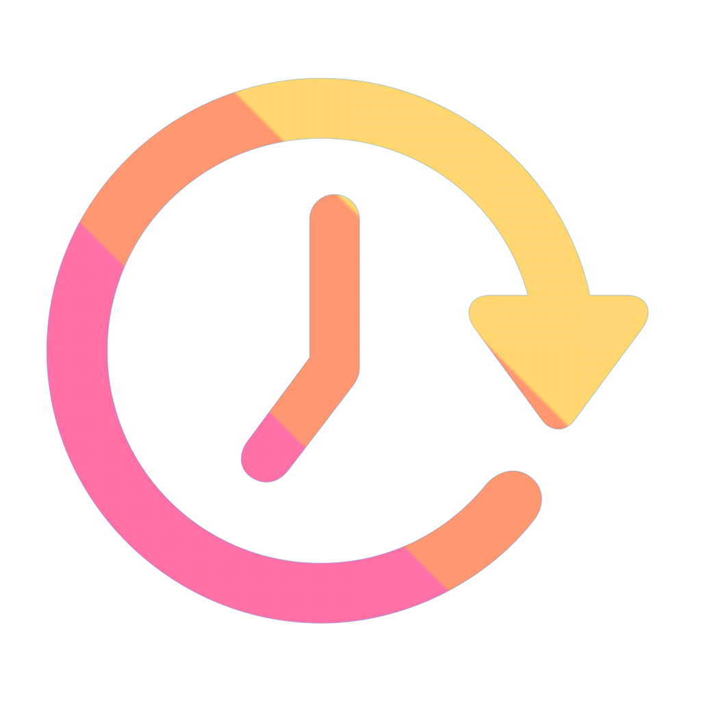

Configuration
La page d’aide explique comment activer l’extension Safari sur iPhone, iPad et Mac.

Auto Refresh & ClickerAide pour Auto Refresh & Clicker, autorisations Safari, achat et restauration App Store.
La page d’aide explique comment activer l’extension Safari sur iPhone, iPad et Mac.
L’app est vendue sur l’App Store. Si un achat n’apparaît pas, vérifiez le même Apple ID et essayez la restauration.
Si le panneau de l’extension est masqué, rouvrez-le depuis la barre d’adresse Safari, arrêtez la tâche puis relancez-la.